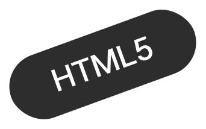
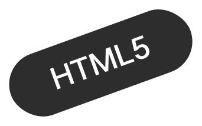

Hybrid
Beyond the boundaries of Design


why Zero?
디자인, 퍼블리싱, 그리고 모션그래픽을 통합하여
디자인의 경계를 넘어 새로운 가능성을 탐구하고자 합니다.
19년의 경력과 지속적인 학습, 다양한 분야에 걸친 전문성으로
여러분의 팀에 기여하겠습니다.
ABOUT
- 이름 :김선영
- 전문 분야 :웹 디자인 및 퍼블리싱
- 업무 경험 :GUI 디자인 및 퍼블리싱 / 편집 디자인 등
- MBTI : ISFJ
- 취미 :독서
- 가치관 :다른 사람을 돕는 과정에서 결국 나도 성장한다
책임 & 신뢰
- FROM ZERO TO INFINITE
- FROM ZERO TO INFINITE
- FROM ZERO TO INFINITE
- FROM ZERO TO INFINITE
SKILL
제로에서 시작해 무한대까지, 스킬의 완성으로 펼쳐지는 경계 없는 상상력
 



Contact
저와 함께 프로젝트를 진행하고 싶으신가요?
boundaryzero23@gmail.com